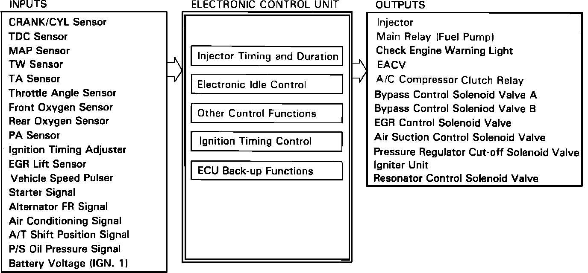
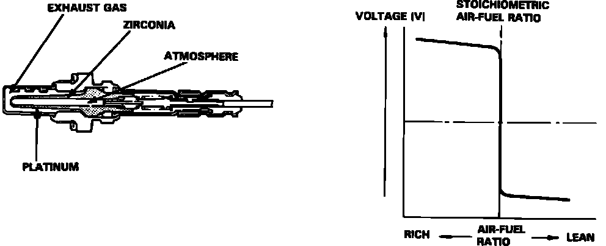

Modes of Operation
Fig. 31 ECU Inputs And Outputs:

The ECU contains memories for the basic discharge durations of the fuel injectors at various engine speeds and manifold pressures. The basic discharge duration of the fuel injector is modified by signals from various sensors to obtain the final discharge duration.
ELECTRONIC IDLE CONTROL
When the engine is cold, the A/C compressor is ON, the transmission is in gear (automatic transmission), and/or the alternator is charging, the ECU controls current to the electronic air control valve (EACV) to maintain correct idle speed.
IGNITION TIMING CONTROL
The ECU contains memories for basic ignition timing at various engine speeds and manifold pressures, Ignition timing is also adjusted for coolant temperature.
OTHER CONTROL FUNCTIONS
1. Starting control
When the engine is started, the ECU provides a rich mixture.
2. Fuel Pump Control
When the ignition is initially switched ON, the ECU supplies ground to the main relay which supplies current to the fuel pump for 2 seconds to pressurize the system.
When the engine is running, the ECU supplies ground to the main relay which supplies current to the fuel pump.
When the engine is not running and the ignition is turned ON, the ECU cuts the ground to the main relay which cuts the current to the fuel pump.
3. Fuel Cut-Off Control
During deceleration with the throttle valve closed, current to the injectors is cut-off at speeds over 1,050 rpm (M/T), 1,000 rpm (A/T), to improve fuel economy.
Fuel cut-off action also takes place when engine speed exceeds 6,600 rpm regardless of throttle position to protect the engine from over-running.
4. A/C Compressor Clutch Relay
When the ECU receives a demand for cooling from the air conditioning system (radiator fan control unit), it delays the compressor from being energized, and enriches the mixture to assure smooth transition to the A/C mode.
5. Bypass Control Solenoid Valves (BPCSV A, BPSCV B)
When the engine rpm is below 3,200 rpm BPSCV A and B are activated by a signal from the ECU, intake air is supplied through the long path, then high torque is delivered. At speeds higher than 3,800 rpm, both solenoid valves are deactivated by the ECU, intake air is supplied through the short path in order to reduce the resistance to the airflow.
6. Pressure Regulator Cut-off Solenoid Valve (PRCSV)
When the coolant temperature is above 105°C (221°F) or the intake air temperature is above 80°C (176°F), the PRCSV is energized, cutting manifold vacuum to the fuel pressure regulator for about 60 seconds.
7. Air Suction Control Solenoid Valve (ASCSV)
When the engine is started, the ECU energizes the ASCSV for approximately 10 to 60 seconds (depending on coolant temperature) which supplies vacuum to the air suction valve.
8. EGR Control Solenoid Valve (EGR CSV)
When the EGR is required for control of oxides of nitrogen (NOx) emissions, the ECU supplies ground to the EGR CSV which supplies regulated vacuum to the EGR valve.
ECU BACK-UP FUNCTIONS
1. Fail Safe Function
When an abnormality occurs in the signal from a sensor, the ECU ignores that signal and assumes a pre-programmed value that allows the engine to continue to run.
2. Back-Up Function
When an abnormality occurs in the ECU itself, the injectors are controlled by a back-up circuit independent of the system in order to permit normal driving.
3. Self-Diagnosis Function (Check Engine Warning Light, Red and Yellow indicators)
When an abnormality occurs in a signal from a sensor, the ECU lights the "CHECK ENGINE" warning light, stores the failure code in eraseable memory and indicates the code with an LED on the ECU anytime the ignition is ON.
When the ignition is initially turned on, the ECU supplies ground for the "CHECK ENGINE" warning light for about 2 seconds.
When the ECU detects that the EACV has exceeded the preprogrammed limits, in order to control the idle speed, the Yellow LED indicates this by remaining on, or blinking depending on the limit exceeded.
ON-BOARD DIAGNOSTICS
The On-Board diagnostic system is a built in function of the electronic control unit. The ECU constantly monitors all input and output functions and compares the various readings against a programmed set of standard values. When the reading from a component is significantly out of the "normal" range, the ECU will illuminate the "CHECK ENGINE" light in the instrument cluster to notify the driver that a problem exists.
When it has been reported that the "CHECK ENGINE" light has come on, turn the ignition ON:
COUPE
Pull down the passenger side carpet from under the dashboard and observe the LED on top of the ECU
.
SEDAN
Move the passenger seat fully to the rear, pull down the inspection window cover and observe the LED on the front of the ECU.
The LED indicates a system failure code by its blinking. This code can help to locate and repair failed components in the fuel injection or emission control systems.
OXYGEN SENSOR SYSTEM (OXS)
Fig. 44 Oxygen Sensor And Characteristics Chart:

An oxygen (Lambda) sensor is used to provide more precise control of air/fuel mixtures. This system operates by measuring oxygen content in exhaust gases, as the amount of oxygen remaining in the exhaust gases is directly proportional to the air/fuel ratio of mixtures entering the engine.
The oxygen sensor is made of a ceramic material called zirconium dioxide. The inner and outer surfaces of the ceramic material are coated with a very thin layer of platinum. The outer surface is exposed to the exhaust gasses, while the inner surface is exposed to the outside air.
The difference in the amount of oxygen contacting the inner and outer surfaces of the oxygen sensor creates a pressure differential which results in a voltage signal being generated. The amount of voltage produced is determined by the air/fuel mixture, A high voltage indicates a rich mixture, and a low voltage indicates a lean mixture.
The oxygen sensors are installed on the exhaust manifold.